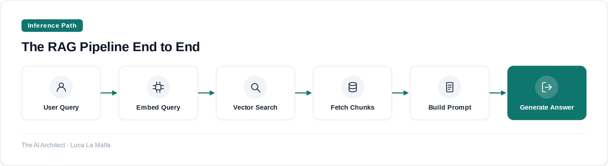
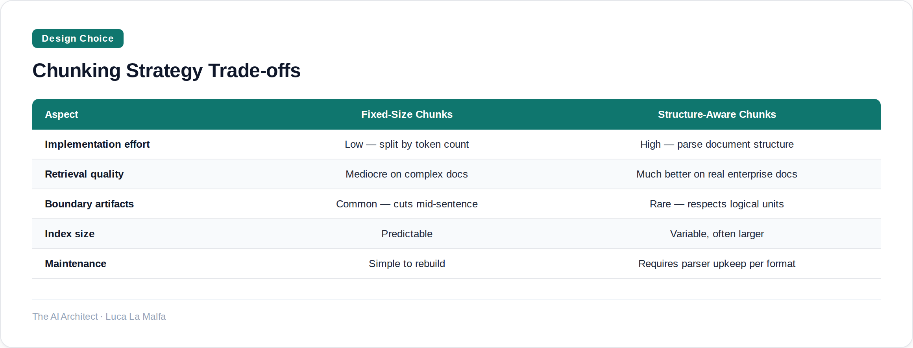

A systematic look at how Retrieval-Augmented Generation works, where it breaks, and how to build it right.
October 13, 2026
Most RAG systems I see in enterprise demos work fine on the happy path — clean PDF, obvious question, obvious answer. Then they hit production. Someone uploads a scanned contract with a two-column layout. Someone asks a question that spans three documents. Someone asks something the corpus doesn't cover at all, and the model hallucinates an answer anyway because retrieval returned something adjacent and the LLM was too polite to say it didn't know. RAG is not a plug-in feature. It's a pipeline, and every stage of that pipeline has failure modes that are genuinely distinct from each other.
The core idea is simple enough: instead of baking all knowledge into the model weights at training time, you retrieve relevant context at inference time and feed it into the prompt. This matters for two reasons. First, LLMs have a knowledge cutoff — they don't know what happened last quarter. Second, they can't memorize every internal document your company has ever produced. RAG solves both problems, but the word 'retrieval' is doing a lot of work in that sentence. Retrieval is not a solved problem. It's the part most teams underinvest in.

Let's go stage by stage. Ingestion is where most teams take shortcuts they later regret. Chunking strategy matters enormously — fixed-size chunks with no overlap are fast to implement and mediocre in practice. A 512-token chunk that cuts a sentence in half at the boundary will produce an embedding that represents half a thought. Overlapping chunks, sentence-aware splitting, or document-structure-aware splitting (headers, sections, tables treated separately) all produce better retrieval, at the cost of more complexity and a larger index. The right choice depends on your document types, and you usually don't know what those are until you look at the actual data.
Embedding model choice is the next decision people underweight. OpenAI's text-embedding-3-small is convenient and good. But if your corpus is in German, or full of legal terminology, or highly domain-specific, a general-purpose embedding model trained on web text may not represent your documents well. There are domain-specific embedding models, multilingual models, and models fine-tuned on retrieval tasks specifically. Switching embedding models mid-project means re-embedding your entire corpus — which is why this decision deserves serious thought up front, not after you've already shipped.

Retrieval itself is usually vector similarity search — cosine distance between the query embedding and the stored chunk embeddings. This works well when the question and the answer use similar vocabulary. It works badly when they don't. A user who asks 'what's our policy on remote work?' may not get back a document titled 'Flexible Working Arrangement Guidelines' if the semantic gap is large enough. Hybrid search — combining dense vector retrieval with sparse keyword retrieval (BM25) — closes this gap substantially. Most serious RAG deployments use hybrid search. Most tutorials don't mention it.
Then there's the generation side. Even with perfect retrieval, you can still get bad answers. The model may ignore retrieved context and answer from weights. It may correctly quote from one retrieved chunk while contradicting another. It may fail to say 'I don't know' when the retrieved documents don't actually answer the question. These are prompt engineering and output validation problems, not retrieval problems — but they're often blamed on retrieval. The diagnostic question is always: did retrieval return the right chunks? If yes and the answer is still wrong, look at the prompt and the model. If no, look at chunking, embedding, and search.
The part I always do first now
Before I write a single line of RAG code on a new project, I build a retrieval evaluation set. Twenty to fifty question-answer pairs, manually verified against the source documents. Then I measure retrieval recall at K — what fraction of the time does the correct chunk appear in the top K results? I run this after every change to chunking, embedding model, or search strategy. Teams that skip this step spend weeks debugging generation when the real problem is that retrieval recall is 40% and they never measured it. You can't improve what you haven't defined.
run-llama/llama_index — Data framework for building RAG pipelines over private data.
chroma-core/chroma — Open-source embedding database used as a RAG retrieval store.